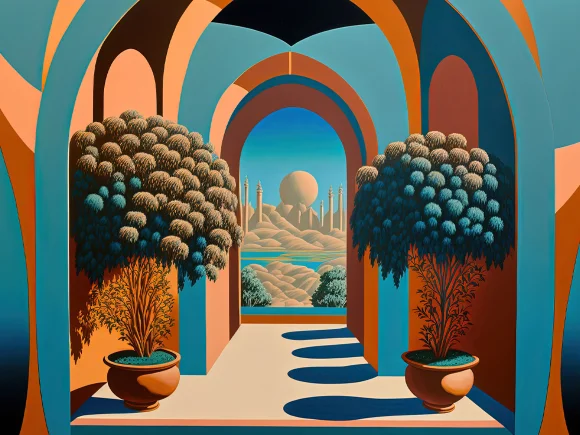

Music App
Using JavaScript I was to create a Music Applicataion where one was able to add a song to a big
list and either create a playlist or play the music itself.
This project took me the longest and it felt the best once I had finished it. I had to master
both JavaScript and SceneBuilder in order to properly finish this project.
Color Cycle
Using Arduino Code I was to create a project where I had to create a green and red LED to the a
circuit with a RGB LED. I had to include 2 buttons. The first
button would toggle between the red and green LED. If the green LED is on when you hit button 2
the RGB will start cycling through the 3 colours. If the 2nd button is pressed the RGB lights
stop.
If the 1st button is pressed the RGB stops AND the green LED turn off and the red LED turns
ON. If the red LED is on, nothing happens when you press the 2nd button.
Order Form
Using PHP code I was to create a simple order form that would ask for a First name, Last name,
Email, and a Phone Number.
It would then ask for what program you are interested in at Georgian College. It would then ask
for your preferred mode of delivery.
After that you could click register and it would give you the best suitable programs.

Password Organizer
My most favoured piece of work i've created. My password organizer. Using Python and numerous
modules such as PyPDF, Time, Re, Random, Openpyxl, and ezsheets. I was to create
a program that would ask for a password. Using the re and random modules it would tell you the
perplexity and strength of your password. Afterwards it would store the password and strength
into an excel sheet
that automatically gets created and formatted that is also encrypted with an encrypted password
that returns to your code.